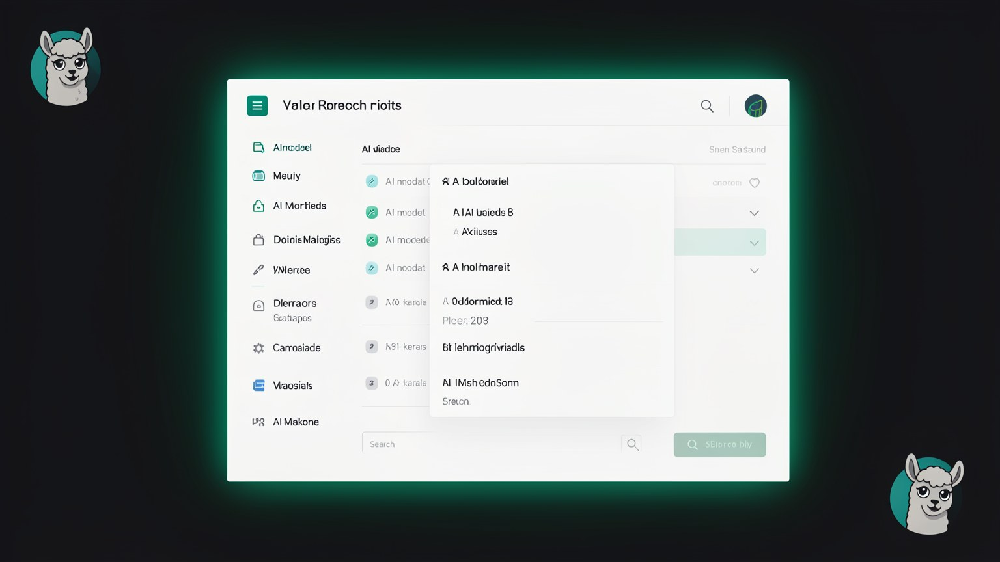

📦 Qué es Ollama y los modelos abiertos
Para ejecutar un LLM en tu máquina, necesitas dos cosas: un programa que sabe cargar y servir el modelo, y el modelo en sí. El programa es el Ollama; los modelos son los «abiertos» (Qwen, Gemma, Mistral...). Este módulo explica qué es cada uno y cómo se comunican.
📦 Qué es Ollama
En el módulo 1.2 separamos el LLM (el cerebro) de la interfaz de chat. Pero el cerebro no funciona por sí solo: alguien tiene que descargar el archivo del modelo, cargarlo en la memoria y estar listo para responder. Ese «alguien» es Ollama — el programa que administra y ejecuta modelos abiertos en tu máquina.
¿Nuevo por aquí? Ollama es un software gratuito que instalas (Mac, Windows o Linux). Piensa en él como una «central de modelos»: con él descargas un LLM, conversas con el modelo y cambias de modelo cuando quieras, todo localmente. El término técnico para este papel es runtime, es decir, el programa que hace que el modelo realmente EJECUTE.
Ollama ofrece dos formas de empezar, y tú eliges la que prefieras: una app con ventana (haces clic y conversas, como en un chat común) y el terminal (escribe comandos cortos). Ambas se comunican con el mismo motor por debajo: son solo dos formas de pedir lo mismo.

Conceptos clave
Programa que descarga, administra y ejecuta modelos localmente.
El motor que hace que el modelo se ejecute realmente en la máquina.
Dos puertas para el mismo motor; usa la que prefieras.
Instalación libre en Mac, Windows y Linux.
🔓 Modelos abiertos
Ollama es el programa; los modelos abiertos son lo que ejecuta. «Abierto» aquí significa pesos abiertos (open weights): cualquier persona puede descargar el archivo del modelo y usarlo gratis en su propia máquina. Esto es lo que hace posible el uso local; sin eso, siempre dependerías del servidor de una empresa.
¿Nuevo por aquí? Los pesos ("weights") son los números que el modelo aprendió durante el entrenamiento: su "conocimiento", en un archivo. Un modelo cerrado (como los de OpenAI) guarda esos pesos en el servidor y tú solo accedes mediante API. Un modelo de pesos abiertos publica el archivo: lo descargas y lo ejecutas donde quieras. Por eso, «abierto» es la clave del curso.
Familia de Alibaba; el curso usa Qwen3 (versiones 30B-A3B y 32B).
Familia abierta de Google; se menciona Gemma 3 27B.
Modelos franceses; se menciona Mistral Small 3.2 24B.
También se menciona una familia abierta sólida en razonamiento.
🌱 Por qué es bueno tener varios modelos
Cada familia tiene fortalezas diferentes (una es mejor para código, otra para texto y otra es más ligera). Como son abiertas y gratuitas, puedes descargar varias, probarlas y quedarte con la que te sirva. Esa libertad para cambiar es algo que los modelos cerrados no ofrecen.
Conceptos clave
De pesos abiertos: cualquiera puede descargarlo y ejecutarlo.
Los números aprendidos durante el entrenamiento: el «conocimiento» del modelo.
Lo cerrado permanece en el servidor; lo abierto lo descargas.
Qwen, Gemma, Mistral, DeepSeek: cada uno con sus fortalezas.
⬇️ Descárgalo una vez, ejecútalo localmente
Aquí está el detalle que cambia todo en el costo: tú descarga el modelo UNA vez. Después de eso, el archivo queda en tu disco y funciona localmente: sin una nueva conexión ni un nuevo cobro. Es la diferencia entre comprar un libro (pagas una vez y lo lees siempre) y alquilarlo por página leída.
Descarga (una vez)
Ollama descarga el archivo del modelo de Internet. Es el único paso que necesita conexión de red — y puede ser pesado (algunos modelos superan los 15 GB).
Permanece en el disco
El modelo pasa a ser tu archivo local. Puedes listar lo que ya descargaste con ollama list y borra lo que no uses.
Se ejecuta sin conexión, gratis
A partir de aquí, cada conversación ocurre en tu máquina — sin internet y sin costo por uso, para siempre.
ollama list¿Nuevo por aquí? O terminal y es esa pantalla de texto donde escribes comandos. Cada comando de Ollama empieza con la palabra ollama seguida de lo que quieres (list, run, pull...). Solo lo usarás de verdad en la Trilha 2; por ahora, basta con reconocer el patrón.
Conceptos clave
Solo el primer paso necesita internet.
El modelo pasa a ser tuyo; ocupa espacio (pueden ser GB).
Muestra los modelos que ya se descargaron.
Después de descargarlo, cada conversación es gratuita.
🗂️ Cómo Ollama sirve el modelo
Aquí está la pieza que lo conecta todo. Cuando Ollama está en ejecución, no se queda esperando a que abras la app: mantiene un servicio local conectado en segundo plano, con un dirección en tu propia máquina. Cualquier programa en esta computadora puede enviar una solicitud a esa dirección y recibir la respuesta del modelo.
¿Nuevo por aquí? Un endpoint (o «dirección del servicio») es como un timbre local: un lugar fijo donde otro programa «toca» para pedir algo. El de Ollama está en tu propia máquina (en localhost — "esta máquina de aquí"), entonces la solicitud nunca sale de la computadora. EXACTAMENTE así es como Hermes se comunicará con tu modelo en la Ruta 2.
Sigue las flechas: el Hermes hace la solicitud al servicio de Ollama, que carga el modelo y devuelve la respuesta, todo dentro del recuadro punteado (tu máquina). Ese es el conducto que vas a conectar en el módulo 2.5.
Conceptos clave
Ollama queda activo en segundo plano, listo.
La dirección donde otros programas solicitan respuestas.
"Esta máquina": la solicitud nunca sale de la computadora.
Y es a través de este endpoint que el agente se comunica con el modelo.
🔢 Parámetros: qué significa la "B"
Verás nombres como Qwen3 32B o Gemma 3 27B. Esa «B» es lo primero que debes entender al elegir un modelo: indica los parámetros, en miles de millones. En términos generales, más parámetros = modelo más capaz, pero también más pesado.
¿Nuevo por aquí? Parámetros son los «ajustes internos» que aprendió el modelo: esos son los pesos del tema 2, ahora cuantificados. «32B» quiere decir 32 mil millones de ellos. Como cada parámetro ocupa espacio en la memoria, la «B» también da una pista de cuánta RAM lo que pida el modelo. (RAM = la memoria de trabajo de la computadora; lo explicamos en detalle en el módulo 1.4.)
La barra crece con la «B»: el de ~8B y ligero y rápido, los de 27-32B (los del video) son el equilibrio, y los 70B+ son más capaces, pero requieren mucha más memoria. «Más grande» no siempre es lo adecuado para TU equipo.
📊 Cuidado con la lectura
Más «B» no es automáticamente mejor para ti: un modelo demasiado grande no cabe en tu memoria y puede que ni siquiera se ejecute. El número correcto es el que ofrece buena calidad DENTRO de lo que tu hardware soporta: tema del módulo 1.4 y de la elección práctica en la Trilha 2.
Conceptos clave
Los ajustes internos aprendidos; la «B» los cuenta en miles de millones.
32 mil millones de parámetros, por ejemplo.
Más parámetros requieren más RAM y son más lentos.
El mejor "B" depende de tu hardware, no del número más grande.
🆚 Ollama (local) vs. nube
Para completar el vocabulario, conviene compararlos directamente. Usar un modelo por Ollama es usar un modelo mediante la nube resuelven el mismo problema (generar texto), pero en lugares y condiciones muy diferentes.
✓ Ollama (local)
- ✓El modelo está en tu disco; los datos no salen.
- ✓Gratis después de descargar; funciona sin conexión.
- ✓Eliges y cambias de modelo libremente.
- ✓Limitado por la RAM y el chip de tu computadora.
✗ Nube (modelo de API)
- ✗Los datos se transfieren al servidor de la empresa.
- ✗Cobra según el uso y requiere internet.
- ✗No controlas el modelo ni los cambios de reglas.
- ✓A cambio, suele ser más potente en las tareas difíciles.
Sin ideología: como vimos en el 1.1, no es «Ollama siempre». La nube es mejor para tareas pesadas; el modelo local, para la privacidad, el costo y trabajar sin conexión. Hermes te permite usar ambos, y los tres modos del 1.6 sirven precisamente para alternar entre ellos.
Conceptos clave
Privado, gratis, sin conexión; limitado a tu hardware.
Potente, pero de pago, en línea y con los datos saliendo.
Los dos generan texto; cambian el lugar y las condiciones.
Hermes alterna entre local y nube (módulo 1.6).
Autocomprobación (opcional): ¿qué relación hay entre Ollama y un modelo como Qwen3?
🎯 Resumen del módulo
Siguiente módulo:
1.4 — Ventana de contexto y parámetros